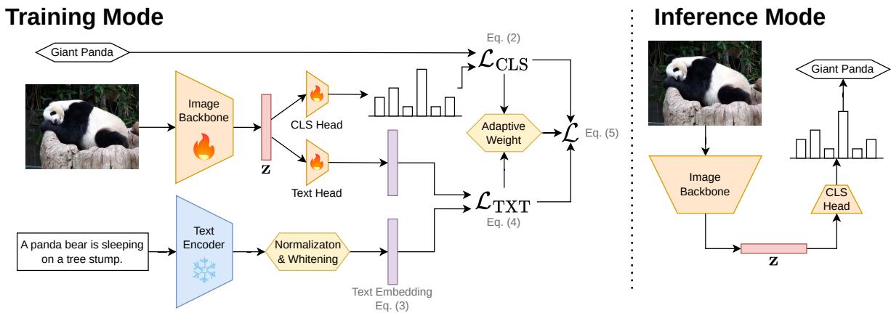
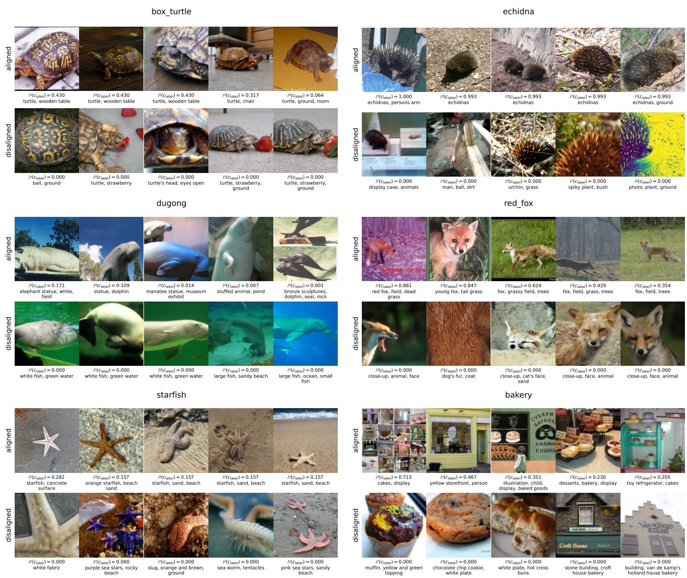

Language-guided visual representation · P1 · 2026-05-25
TextTeacher：冻结文本编码器可以作为训练期语义锚点，推理时仍保留纯视觉模型。
今天最值得先读：它不是完整 CLIP 式预训练，而是把语言语义变成低成本的视觉表征塑形目标。
编号2605.22098
优先级P1
类别Language-guided visual representation
会议TMLR 2026
方法frozen text encoder semantic anchors for image representation training
来源arXiv / OpenReview
先说结论。冻结文本编码器可以作为训练期语义锚点，推理时仍保留纯视觉模型。 今天最值得先读：它不是完整 CLIP 式预训练，而是把语言语义变成低成本的视觉表征塑形目标。


它真正改变的是训练信号，而不是榜单数字
frozen text encoder semantic anchors for image representation training。这类工作值得被放在通用视觉自监督日报里，不是因为它一定立刻刷新所有 benchmark，而是因为它改变了模型“从哪里拿监督”的方式。
MinerU full.md is now part of the source bundle for this page; the next pass will use it for paper-native English quotes and tighter argument writing.
读这篇时要盯住的风险
当前页面是站点原型，细节还没有逐段引用 MinerU 全文。正式流程会把每篇论文的 abstract、method、caption 和关键表格放进页面生成上下文，并保留至少两段原文引文。
下一步怎么接进日报
每日自动化先筛出 P1/P2，再对 P1 论文跑 MinerU；有 pipeline 或 motivation 图的页面进入 GitHub Pages，飞书只发摘要与入口。